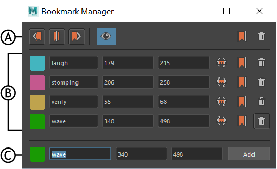

- 在范围滑块(Range slider)中的“时间滑块书签”(Time Slider Bookmarks)图标
 上单击鼠标右键，然后选择“书签管理器”(Bookmark Manager)
上单击鼠标右键，然后选择“书签管理器”(Bookmark Manager)
- 在“时间滑块”(Time Slider)上单击鼠标右键，展开“动画控件”(Animation Controls)菜单中的“时间滑块书签”(Time Slider Bookmarks)，然后选择“书签管理器”(Bookmark Manager)

书签管理器(Bookmark Manager)：A. 工具栏，B. 书签列表(Bookmark list)，C. 添加新书签(Add New Bookmark)
“书签管理器”(Bookmark Manager)允许您同时编辑多个书签。
书签管理器工具栏
书签管理器工具栏包含适用于所有书签的工具。
- 框显上一个书签(Frame Previous Bookmark)
- 将播放范围设置为当前时间之前的书签的开始和结束。
- 框显当前选定的书签(Frame currently selected Bookmark)

-

- 将播放范围设置为当前时间书签的开始和结束。
- 框显下一个书签(Frame Next Bookmark)

- 将播放范围设置为当前时间之后的书签的开始和结束。
- 显示书签(Show Bookmarks)

- 在时间滑块(Time Slider)上启用或禁用书签的显示。
- 框显所有书签(Frame All Bookmarks)
- 将播放范围设置为包含场景中的所有书签。
- 删除所有书签(Delete all Bookmarks)

- 从场景中清除所有书签。
书签列表(Bookmark list)
显示场景中所有书签的列表。您可以更改每个书签的名称、颜色或持续时间，并访问场景中每个书签的特定命令。
- 框显书签(Frame Bookmark)
- 将播放范围设置为当前书签的开始和结束。
-
- 使用当前选择更新书签(Update Bookmark with selection)

- 使用时间轴上选定帧的开始和结束时间覆盖当前书签的开始和结束帧。
- 删除书签
- 从场景中移除当前书签。
添加新书签(Add New Bookmark)
为新书签选择颜色、名称、开始时间和结束时间，然后单击“添加”(Add)。
也可以按 Alt (Option) + Shift + T 创建书签，而无需打开“书签”(Bookmark)窗口。此书签未命名，并指定随机颜色。
注： 如果未在相关字段中输入值，则会使用默认颜色在当前帧上创建单帧书签。